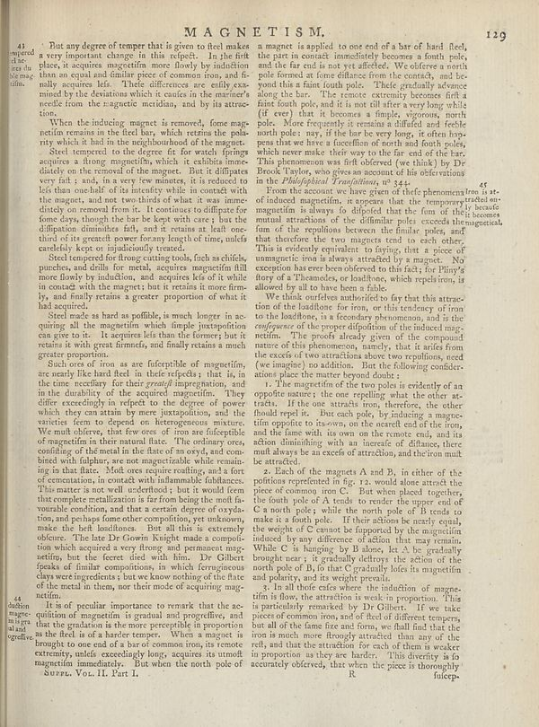

Scan ID britannica:309f765b1ecc83e0a7f7762e44b4a927a7555443:train:756
Image SHA-256 33eb91fcbe8d9d080f38ca26a23b791f56382bebff38a428cd4ac3cd30fb48f3
Status: ok. Running header: MAGNETISM. (article_title). Removed page furniture: Page-header: MAGNETISM., Page-header: 129.
PDF · raw Parse reply · LaTeX

| # | Class | Box | Parse 3.5 | Used text | Source |
|---|---|---|---|---|---|
| 2 | Text | [0.0166, 0.0578, 0.0596, 0.1266] | 41 tempered sheet from a the magma film. | 43 tempered sheet from a the magma film. | super_vl |
| 3 | Text | [0.0713, 0.0563, 0.4629, 0.1578] | But any degree of temper that is given to feed makes a very important change in this respect. In the first place, it acquires magnentifin more flowly by induction than an equal and similar piece of common iron, and its maly acquired lets. These differences are only trans- mined by the deviations which it causes in the manner’s needle from the magnetic meridian, and by its attractive tions. | But any degree of temper that is given to steel makes a very important change in this respect. In the first place, it acquires magnetism more slowly by induction than an equal and similar piece of common iron, and finally acquires less. These differences are easily ex- plained by the deviations which it causes in the mariner's needle from the magnetic meridian, and by its attrac- tion. | super_vl |
| 4 | Text | [0.0723, 0.1602, 0.4639, 0.2016] | When the inducing magnet is removed, fome mag- netti remains in the fixed bar, which retains the polo- ry which, it will be the neighborhood of the matter. | When the inducing magnet is removed, some magnetism remains in the fixed bar, which retains the polarity which it had in the neighbourhood of the magnet. | super_vl |
| 5 | Text | [0.0732, 0.2023, 0.4648, 0.3484] | Steel tempered to the degree fit for watch Springs acquires along magnetic which is exhibits imme disels on the removal of the magnet. But it diffipates very fat ; and, in a very few minutes, it is reduced to lois than one half of its strength while in control with the magnet, and not two thirds of what it was distety on removal from it. It continues to diffidate for former days, though the her be kept with care'; but the diffusion diminishes at, and in the near at, half over third of its greatest power forany length of time, unleef cardially keep or indjudicially treated. | Steel tempered to the degree fit for watch springs acquires a strong magnetism, which it exhibits immediately on the removal of the magnet. But it diffuses very fast; and, in a very few minutes, it is reduced to less than one half of its intensity while in contact with the magnet, and not two thirds of what it was immediately on removal from it. It continues to diffuse for some days, though the bar be kept with care; but the diffusion diminishes fast, and it retains at least one third of its greatest power for any length of time, unless carelessly kept or injudiciously treated. | super_vl |
| 6 | Text | [0.0586, 0.3477, 0.4619, 0.4266] | Steel tempered into flowing cutting tools, fish a schlieb, punches, and drills for metal, acquires magnifin fill more flowly by induction, and acquires five of it while in contact with the magnet, but it certain it more firms by, and finally retains a greater proportion of who it had acquired. | Steel tempered for strong cutting tools, such as chisels, punches, and drills for metal, acquires magnetism full more slowly by induction, and acquires less of it while in contact with the magnet; but it retains it more firmly, and finally retains a greater proportion of what it had acquired. | super_vl |
| 7 | Text | [0.0576, 0.4273, 0.4658, 0.4945] | Steel made as hard as possible, is much longer in ac- quiring all the magnifin which limple juxtaposition can give to it. It acquires less than the formerly but it retains is with great firmness, and finally retains a much greater proportion. | Steel made as hard as possible, is much longer in acquiring all the magnetism which simple juxtaposition can give to it. It acquires less than the former; but it retains it with great firmness, and finally retains a much greater proportion. | super_vl |
| 8 | Text | [0.0566, 0.4953, 0.4531, 0.8273] | Such one of iron as are fulcypible of magnetifi, are nearly like hard feel in their effects you that in the time necessary for their _properlift_ impregnation, and in the durability of the acquired magnifine. They effic exceedingly in respect to the degree of power which they can attain by mere juxtaption, and the virieties form to depend on heterogeneous mixture. We emit offriever, thus far once of our ones of influence of of magnetism of the metal in the fate of my way, and com- bred with dolphins, are not magnentable while remain- ing in that there. Mott core require reading, and a fort of | Such ores of iron as are susceptible of magnetism, are nearly like hard steel in their effects; that is, in the time necessary for their great impregnation, and in the durability of the acquired magnetism. They differ exceedingly in respect to the degree of power which they can attain by mere juxtaposition, and the varieties seem to depend on heterogeneous mixture. We must observe, that few ores of iron are susceptible of magnetism in their natural state. The ordinary ores, consisting of the metal in the state of an oxyd, and combined with sulphur, are not magnetizable while remaining in that | super_vl |
| 9 | Text | [0.0557, 0.8234, 0.4541, 0.9219] | It is of peculiar importance to work that the ac- quition of magnetization is gradual and progrestive, and that the gradation is the more perceptible in proportion as the field is of a hastheric temper. When a magnet is hrough to one end of a bar of common iron, to remote extremity, unleef exceedingly long, requires its utmost magnifin immediately. But when the north pole of | It is of peculiar importance to remark that the acquisition of magnetism is gradual and progressive, and that the gradation is the more perceptible in proportion as the field is of a harder temper. When a magnet is brought to one end of a bar of common iron, its remote extremity, unless exceedingly long, acquires its utmost magnetism immediately. But when the north pole of | super_vl |
| 10 | Text | [0.4668, 0.0508, 0.8682, 0.2547] | a magnet is applied: to one end of a bar of hard flee, the part in contact immediately becomes a fourth pole, and the far end is not yet affected. We offer a north pole formed a fance difference from the concept, and bec- sent that a faint tooth pole. "Their gradually advance along the bar. The remote extremity become frit a faint fourth pole, and it is not differ very long while (If ceer) that it becomes a simple, vigorous, north pole. More frequently it remains a difficult and recycle north pole: may, if the her for very long, it often hop- pus that have a sacrifice of north and forth poles, | a magnet is applied to one end of a bar of hard steel, the part in contact immediately becomes a fourth pole, and the far end is not yet affected. We observe a north pole formed at some distance from the contact, and be- yond this a faint fourth pole. These gradually advance along the bar. The remote extremity becomes first a faint fourth pole, and it is not till after a very long while (if ever) that it becomes a simple, vigorous, north pole. More frequently it remains a diffused and feeble north pole: nay, if the bar be very long, it often hap- pens that we have a succession of north and fou | super_vl |
| 11 | Text | [0.4678, 0.2586, 0.8701, 0.4031] | From the account we have given of their phenomenons to a st- of indeed magnifine, it appears that the temporary because magnifin is always lo disfpided that the rim of their beces mutual attractions of the difficiliate poles exceeds the gentich im of the repollon between the limlar, poles, and that therefore the two magnets tend to each other. This is evidently equivalent to flying, that a piece of magnungtic iron is always attracted by a magnet. No exception has ever been observed to this fact, for Phys's dury of a Thamades, or loadlines, which repeals iron, is allowed by all to have been a f | From the account we have given of these phenomena of induced magnetism, it appears that the temporary magnetism is always so disposed that the sum of the mutual attractions of the dissimilar poles exceeds the sum of the repulsions between the similar poles, and that therefore the two magnets tend to each other. This is evidently equivalent to saying, that a piece of unmagnetic iron is always attracted by a magnet. No exception has ever been observed to this fact; for Pliny's story of a Theamedes, or loadstone, which repels iron, is allowed by all to have been a fable. | super_vl |
| 12 | Text | [0.4688, 0.4039, 0.8604, 0.5234] | We think outfellow authorified to lay that this attraction of the headlines for iron, or this tendency of iron to the headline, is a secondary phenomenon, and is the _conference_ of the proper disposition of the induced mag- netimin. The proofs already given of the compound matters of this phenomena, namely, that is arise from the excess of two attributions above two repetitions, need (we imagine) no addition. But the following condir- actions place the matter beyond doubt. | We think ourselves authorised to say that this attraction of the loadstone for iron, or this tendency of iron to the loadstone, is a secondary phenomenon, and is the consequence of the proper disposition of the induced magnetism. The proofs already given of the compound nature of this phenomenon, namely, that it arises from the excess of two attractions above two repulsions, need (we imagine) no addition. But the following considerations place the matter beyond doubt. | super_vl |
| 13 | Text | [0.4697, 0.5242, 0.8711, 0.6422] | I. The magnifinal of the two poles is evidently of an opposite nature; the one repelling what the other at- trade). If the aircraft iron, therefore, the other should result it. But each path, by changing a magre- tifion opposite to its own, on the nearest end of the iron, and the fans with its own on the remote end, and its action diminishing with an increase of diflants, there mult always be an excess of attraction, and the iron mult be attached. | 1. The magnetism of the two poles is evidently of an opposite nature; the one repelling what the other attracts. If the one attracts iron, therefore, the other should repel it. But each pole, by inducing a magnetism opposite to its own, on the nearest end of the iron, and the same with its own on the remote end, and its action diminishing with an increase of distance, there must always be an excess of attraction, and the iron must be attracted. | super_vl |
| 14 | Text | [0.4707, 0.6414, 0.8564, 0.8023] | A Each of the magnets A and B, in either of the positions reprefened in fig. 12. would alone attract the piece of common iron. But when placed together, the fourth pole of 8 tends to render the upper end of C a north pole; while the north pole of B tends to take it a South pole. If there actions be nearly equal, the weight of C cannot be supposedly be the magnifin induced by any difference of action that may remain. While C is hanging D I alone, let. A be gradually enough tree, it gradually thorley the action of the north pole of B, to that C gradually lofos its magnifin and polarity, and its | 2. Each of the magnets A and B, in either of the positions represented in fig. 12. would alone attract the piece of common iron C. But when placed together, the fourth pole of A tends to render the upper end of C a north pole; while the north pole of B tends to make it a south pole. If their actions be nearly equal, the weight of C cannot be supported by the magnetism induced by any difference of action that may remain. While C is hanging by B alone, let A be gradually brought near; it gradually destroys the action of the north pole of B, so that C gradually loses its magnetism and polarity, a | super_vl |
| 15 | Text | [0.4717, 0.8016, 0.8545, 0.9227] | §. He all three cases where the induction of magne- tifism is flow, the attraction is weak in proportion. This is particularly remarked by Dr Gilbers. If we take piece of common iron, and of fleet of different temps, but all of the fame fine and form, we shall find that the iron is much more thought attracted than any of the rel, and that the attraction for each of them a weaker proportion as they are harder. This liberty is to accurately observed, that when the piece is thoroughly | §. In all three cases where the induction of magnetism is slow, the attraction is weak in proportion. This is particularly remarked by Dr Gilbert. If we take pieces of common iron, and of steel of different tempers, but all of the same size and form, we shall find that the iron is much more strongly attracted than any of the steel, and that the attraction for each of them is weaker in proportion as they are harder. This diversity is so accurately observed, that when the piece is thoroughly | super_vl |
| 16 | Caption | [0.0781, 0.9203, 0.2627, 0.932] | Surez, Vol. II. Part I. | SUPL. Vol. II. Part I. | super_vl |
| 17 | Picture | [0.8008, 0.9234, 0.999, 0.9367] | R | R | parse |
Britannica scans: National Library of Scotland, CC0 1.0. Wikipedia text: Wikipedia contributors, CC BY-SA 4.0, revision links on each page. Generated 2026-10-18T13:26:14+00:00.